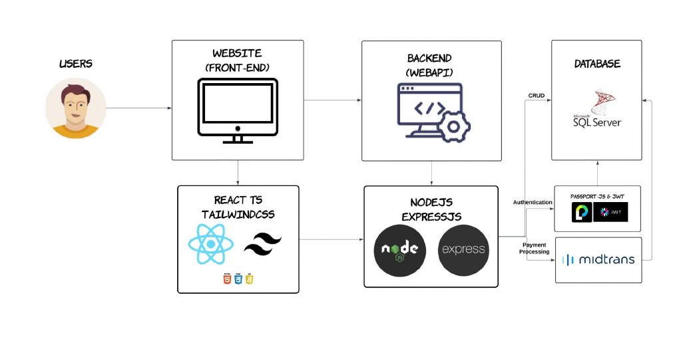
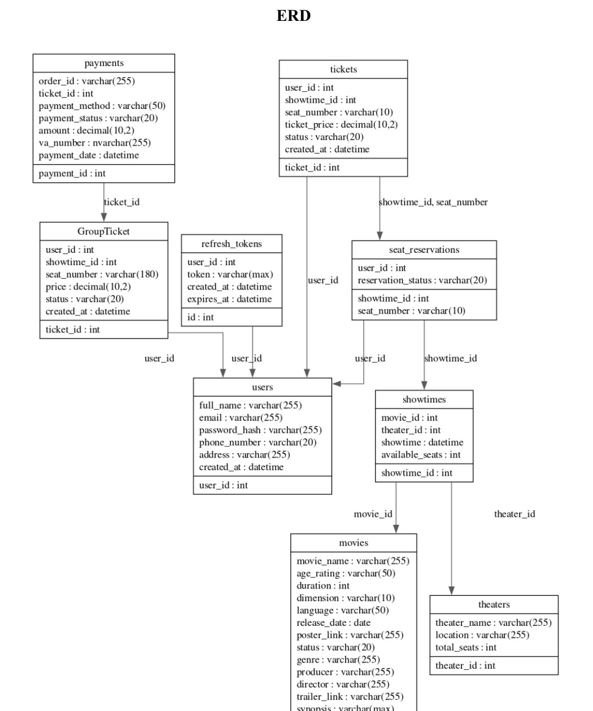
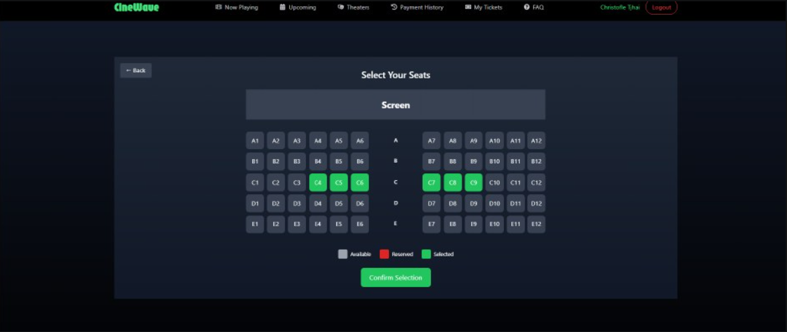
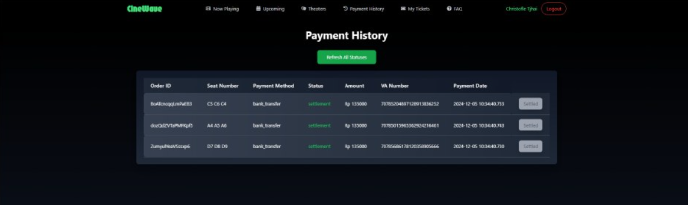

CineWave is a cinema ticket booking platform built for a Software Engineering group project at Binus University. It lets people search for a movie or theater, check real-time seat availability, reserve seats, and pay online — replacing the manual, in-person process of queueing at the counter to buy a ticket and pick a seat. I worked on it with two teammates as a three-person full-stack build, with my focus on the data-flow design and the frontend experience.
Booking a cinema ticket in person means queueing to buy, queueing again to pick a seat, and hoping the seat map the staff shows you is actually up to date. As theaters listed more films across more showtimes, that manual process became slower and more error-prone — for both moviegoers and the theater managing the counter.
We ran a hybrid SDLC: Waterfall for the upfront planning and documentation (architecture, database design, task ownership), then Agile-style prioritization once development started, so we could reorder features as integration surfaced new blockers.
Before any UI, we defined the tech stack and the client-server architecture, then I designed the concept map and Data Flow Diagram against the ERD so every screen had a clear source of data before we built it.
Backend work (auth, CRUD APIs, payment integration) and frontend components (homepage, navigation, movie pages, seat reservation) were built in parallel against the shared ERD, tracked on a day-by-day backlog.
Frontend components were connected to the live API, then the payment flow was integrated with Midtrans' sandbox, followed by a normalization pass (a new GroupTicket table) to support multi-seat bookings cleanly.
We seeded the database with dummy movies and showtimes, tightened the visual design across every page, and tested the frontend-to-API integration end to end before submission.
CineWave follows a client-server model: a React + TypeScript frontend talks to a Node.js/Express API, which handles authentication (Passport.js + JWT), CRUD against SQL Server, and payment processing through Midtrans.

Six related tables anchor the app: users, movies, theaters and showtimes on one side, and tickets, seat reservations and payments on the other — with a later GroupTicket table added to keep multi-seat bookings from denormalizing the core ticket record.

Every feature maps to a step in the booking journey — from finding a film to holding on to the ticket afterward.
Login, register and logout via Passport.js Local Strategy and JWT. Sensitive pages and endpoints are locked behind a valid token.
Keyword search across movies and theaters, plus filtering by region so results only show showtimes actually playing nearby.
Synopsis, trailer, poster, director, producer, age rating, duration and language — all served from the database and rendered per film.
A visual seat map reflects available, reserved and selected seats in real time, backed by POST/DELETE calls against the seat reservation table.
Checkout is handled through Midtrans' sandbox, simulating bank-transfer (virtual account) payment with a cancel-booking path if payment isn't completed.
Users can look back at past orders and booked tickets at any time, without needing to ask the box office.


Working alongside two teammates on backend, auth and payments, I owned the data-flow design and most of the frontend surface.
Node.js and Express were chosen over the ASP.NET stack more familiar from coursework specifically because Indonesian payment methods (bank transfer, e-wallets like GoPay and DANA) had far better-supported libraries in the Node ecosystem — a reminder that the "expected" stack isn't always the right one for the market you're actually building for. Splitting frontend and backend into separate codebases also paid off: each of us could work, test with Postman, and debug our own layer without blocking the others.